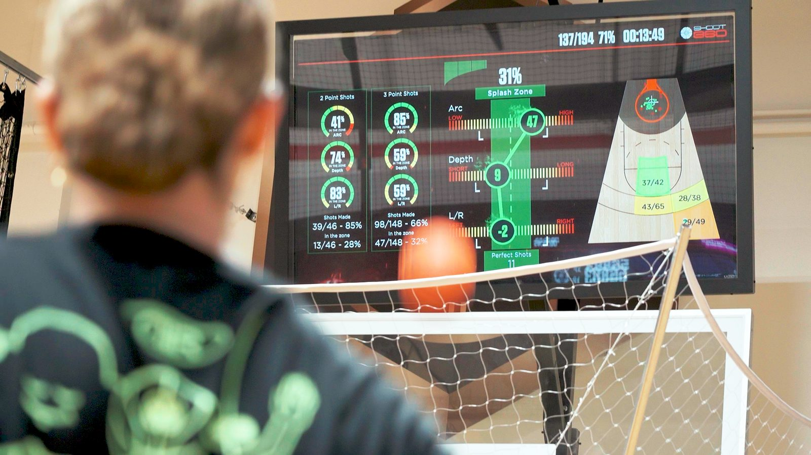

Home › Technology › Publications
Publications
In the press,
on NBA courts
Articles, broadcasts, team announcements and partner pages about the Splash Meter, the skill courts and the network of gyms that run them. Every link goes to the source, and every source was read before it was listed.
The NBA connection
Who actually uses this
Four NBA organizations run or co-brand Shoot 360 facilities: the Golden State Warriors (Golden State Sports Academy, since 2020), the Utah Jazz (Shoot 360 Lehi, 2022), the Brooklyn Nets and New York Liberty (Brooklyn Basketball Training Center, 2025) and the LA Clippers (Jr. Clippers camps at Shoot 360 Torrance and a fan experience at Intuit Dome). A dozen current and former NBA and WNBA players own or invest in locations.
The shot-tracking engine inside the Splash Meter is licensed from Noah Basketball, whose cameras read arc, depth and left-right on every shot in most NBA practice facilities. When a story below says "28 of 30 NBA teams", that is the system it is counting. What Shoot 360 adds is the gym built around it: the skill courts, the coaching, the games and the app.

Team sources
From the teams themselves
“Golden State Sports Academy first introduced Shoot 360 programming in 2020 at the Sephora Performance Center in Oakland.”Golden State Warriors / Valkyries · Feb 2026
“You are getting constant feedback after every shot.” — Zaza Pachulia, on the Warriors academy courtsABC7 San Francisco · Sept 2021
“The Utah Jazz – Shoot 360 partnership is the first of its kind in the NBA.”Utah Jazz youth site · Jazz release, Nov 2022
“What Brooklyn Basketball is building with Shoot 360 is giving kids real tools to grow.” — Breanna Stewart, New York LibertySports Illustrated · Aug 2025
Five shooting cages and three skill cages across from Barclays Center: “the only place in the Northeast with this kind of technology.”Spectrum NY1 · Oct 2025 · Brooklyn Basketball
Jr. Clippers Summer Camp at Shoot 360 Torrance, in the Clippers' own photo gallery.NBA.com / LA Clippers · July 2025
- Golden State Sports Academy (Warriors-owned)About Shoot 360
Shaun Livingston, Juan Toscano-Anderson, Damion Lee and Kevon Looney filmed working out on the courts at the Sephora Performance Center.
- PR Newswire · Aug 27, 2026Golden State Sports Academy and Shoot 360 open three new Bay Area locations
Courts that measure arc, depth, alignment, passing and ball-handling velocity, accuracy and reaction time.
- Youth Sports Business Report · Aug 12, 2025Brooklyn Sports & Entertainment partners with Shoot 360
The Nets and Liberty parent installs eight training stations: five shooting cages, three skill cages.
- NBA G League · Jan 13, 2025Birmingham Squadron partner with Shoot 360
The Pelicans' G League affiliate on the Noah shot-tracking inside Shoot 360 Birmingham: “partnered with 28 of 30 NBA teams”, “more than 1.5 billion shots” tracked.
The pros
Players who put their names and money on it
Zaza Pachulia
Two-time NBA champion; investor, franchisee and advisory board since 2020. “I thought I'd seen everything, but I've never seen anything like this.” Fox Business, 2025 · announcement, 2020 · Tbilisi opening, U.S. Embassy
Trae Young
Atlanta Hawks guard; investor and owner of the Atlanta location. U.S. Chamber of Commerce, 2026 · Fox Business
Breanna Stewart & Sue Bird
WNBA champions and investors. Stewart: “What Brooklyn Basketball is building with Shoot 360 is giving kids real tools to grow.” SI, 2025 · Lynnwood Times
Thaddeus Young
NBA forward; owns the Memphis locations. “The ability to track data and analytics in real time, while gamifying the experience, really stood out.” Franchise Times, 2025 · Daily Memphian
Jamal Crawford
Three-time Sixth Man of the Year; opened the Seattle gym, sits on the advisory board and is global ambassador. Front Office Sports, 2020
Rodney Stuckey & Dan Dickau
Former NBA guards who own the Kirkland and Spokane locations. Stuckey: “Technology gives players instant feedback. Everything is via an app.” Spokesman-Review, 2022 · Spokane Journal of Business, 2025
Fred Jones
Former Pacer and 2004 dunk champion; opened Indianapolis in 2017 and Naperville in 2022 with WeWork co-founder Miguel McKelvey. WISH-TV, 2017 · PR.com, 2022
Peyton Siva & Craig Hodges
Siva (Louisville champion, Detroit Pistons) owns the Louisville location: “If you get all three within that green splash zone, you make ninety percent of your shots.” Hodges, two-time Bulls champion, competes in the Ballislife league. WDRB, 2023 · Sporting News, 2026
Damian Lillard
Posted a Shoot 360 stat graphic from a rehab workout: 1,000 makes out of 1,090. KATU Portland, 2026 · KOIN 6
National press & business
Coverage of the technology
- Fox Business · Sept 16, 2025NBA champion Zaza Pachulia, WNBA star Breanna Stewart and other top athletes partner with basketball tech company
The Splash Meter on 75-inch screens; founder Craig Moody: “What matters in shooting is arc, depth, left and right.”
- Microsoft Source · Aug 13, 2026Hoop dreams: how a coach's vision for a high-tech basketball gym is inspiring kids to aim for the perfect shot
45° arc, 11-inch depth and zero alignment error as the 98% target; how the system runs in the cloud.
- U.S. Chamber of Commerce, CO— · Apr 6, 2026How Shoot 360 became one of the nation's fastest-growing sports-tech franchises
The Splash Meter “analyses the arc, depth, and alignment”; 60-plus locations.
- Athletech News · Feb 11, 2026CEO Corner: Shoot 360's Craig Moody on basketball's tech revolution
“We use machine vision to track the ball… arc, depth, alignment, passing velocity and ball-handling precision.”
- Athletech News · Sept 10, 2026Shoot 360 raises $7M to expand connected basketball gyms
Machine vision and real-time analytics across 65-plus locations.
- Athletech News · Feb 12, 2026LA Fitness adds AI-powered basketball courts from Shoot 360
Arc, depth and alignment on shots; velocity, accuracy and reaction time on passing and handling.
- Athletech News · July 23, 2025Shoot 360 takes big shot at youth sports market
Every rep's data delivered to the athlete's app.
- The Sporting News via Yahoo · Sept 20, 2025Power Players: how basketball coach Craig Moody is charting new ground with Shoot 360
Arc, depth, alignment, passing velocity and ball-handling accuracy, synced to the app; the AI announcer in the Global Shooting Leagues.
- The Sporting News via Yahoo · Feb 16, 2026New Shoot 360, LA Fitness collaboration to give fans access to NBA-level tech
Data-driven machine-vision courts inside LA Fitness; Craig Hodges at the launch.
- KOIN 6 Portland · 2026Shoot 360 is helping beginners to NBA players find the Splash Zone
“Every shot instantly appears on a screen above the basket through Shoot 360's patented ‘Splash Meter’.”
- KATU Portland · Apr 5, 2026Shoot 360 elevates basketball development with immersive technology
Immediate feedback on shot arc, depth and accuracy on the shooting courts.
- Front Office Sports · June 30, 2020NBA veteran Jamal Crawford looks to grow basketball with Shoot 360
Games and drills for shooting, ball-handling and passing with instant feedback.
- Franchise Times · Sept 29, 2025Shoot 360 digital training franchise gamifies the basketball grind
Twenty-eight NBA teams use the shot-tracking; “the engine running Shoot 360 was developed by partner company Noah Basketball.”
- Franchise Times · Mar 31, 2026These NBA, NFL and MLB players are turning their attention to franchise expansion
Pachulia: “Why didn't we have this kind of technology growing up?”
- Franchise Times · Dec 23, 2025How Shoot 360 franchisees became a ‘turnaround team’ for struggling units
“Nobody else has the NBA technology that we have.”
- 1851 Franchise · Oct 13, 2025Shoot 360 aims for the Topgolf model
The Warriors as the first NBA-branded franchise location; the Nets, Clippers and Jazz relationships.
- Franchise Chatter · Aug 20, 2025Q&A with founder Craig Moody
Tracking “shooting arc, depth, ball handling speed, and accuracy in real time.”
- Retail Insider · May 15, 2026Shoot 360 opening largest Canadian facility in Oakville
“‘Splash Meter’ technology measures shot arc, depth, and left-to-right alignment in real time.”
- WPVI Philadelphia via Yahoo · Sept 4, 2026‘Shoot 360’ brings high-tech basketball gym to Norristown
Real-time shooting statistics and interactive screen bays.
- Sport Coach America · Dec 10, 2024Embrace the future of skill development: adapt your role as a coach
A coaching-education view of the 30-minute skills court plus 30-minute shooting court session.
- BTL Scouting · July 15, 2024Shoot 360 and the revolution of basketball training
Leaderboards and the app from a scout's perspective.
- Buying Sand Lot · Oct 6, 2025Shoot 360 founder Craig Moody on basketball tech and skill development
“We build our resources for NBA and WNBA players and then we use software to get it to young players.”
Partners & affiliates
Who Shoot 360 builds with
Nike Basketball Camps · US Sports Camps
Official Nike Basketball Camps run at Shoot 360 locations, including Denver, through US Sports Camps: “No other youth camp offers the same level of computer-vision technology and skill assessment tools that are also used by NBA and WNBA teams and players.”
Partnership announcement, Sept 2025 · All Shoot 360 Nike camps · The Denver camp
Noah Basketball
The shot-tracking engine. Noah's licensing partnership put its shooting system and analytics into Shoot 360 gyms in 2020; the same system is installed in most NBA practice facilities.
Noah signs exclusive partnership with Shoot 360, Nov 2020 · Noah: now used by 26 of 30 NBA teams, Dec 2022
Microsoft
The Splash Meter, the app and the network leaderboards run on Microsoft's cloud; Microsoft's own feature tells the story of the 45° arc and the 98% make zone.
LA Fitness
Shoot 360 courts inside LA Fitness clubs, turning gym basketball courts into gamified, data-driven training.
- PR Newswire · Jan 14, 2026Shoot 360 closes out 2025 with record growth, new market expansion and high-impact partnerships
Thirteen new locations in 2025; 60 worldwide.
- PR Newswire · July 1, 2026Shoot 360 builds mid-year momentum
The 3-BALL Solo game with real-time shot feedback and a network leaderboard.
- Yahoo Finance · Sept 4, 2025Shoot 360 unveils Ballislife League with a $20,000 prize pool
“Each rep is quantified by Shoot 360's proprietary technology, capturing arc, depth, accuracy, and makes.”
Podcasts & video
Hear it explained
- Shoot 360 Basketball (official) · YouTubeSplash Meter: In The Zone
The company's own explainer of arc, depth and alignment.
- ABC4 Utah · Nov 2022Utah Jazz open new Shoot 360 training facility
Local television on the Lehi opening.
- Franchising 101 podcast · Oct 23, 2025Craig Moody on building a game-changing franchise (Ep. 266)
Origin story, the technology and the membership model.
- Emerging Franchise Brands · 2023Revolutionizing basketball training with Shoot 360: interview with founder Craig Moody
Founder interview, S1E17.
- ThriveMore with Roger Martin · Jan 8, 2024Craig Moody: a true disrupter using proprietary tech to change basketball training
The evolution of the technology and the NBA and NCAA relationships.
- ABC24 Memphis · Dec 2021High-tech basketball training facility opens in Collierville
Local television on Thaddeus Young's first Memphis location.
Links open third-party sites. Shoot 360 Denver is an independently owned and operated Shoot 360 location; statements in these pieces are the publishers' and speakers' own. List last checked Sept 17, 2026.
Read enough? Shoot on it.
The same arc, depth and alignment numbers the pros get, on your first ten shots.